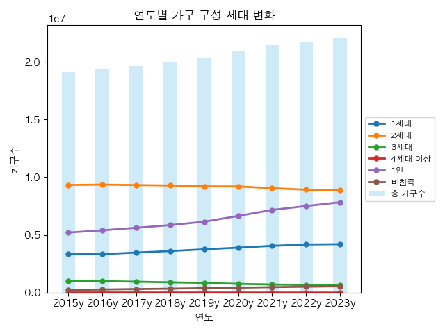
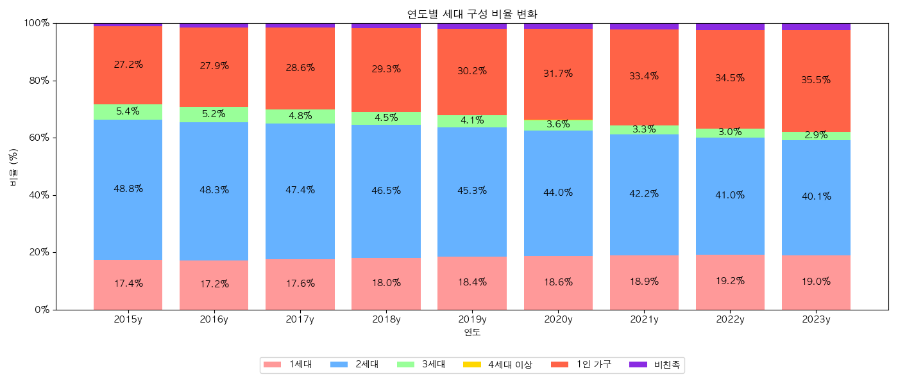
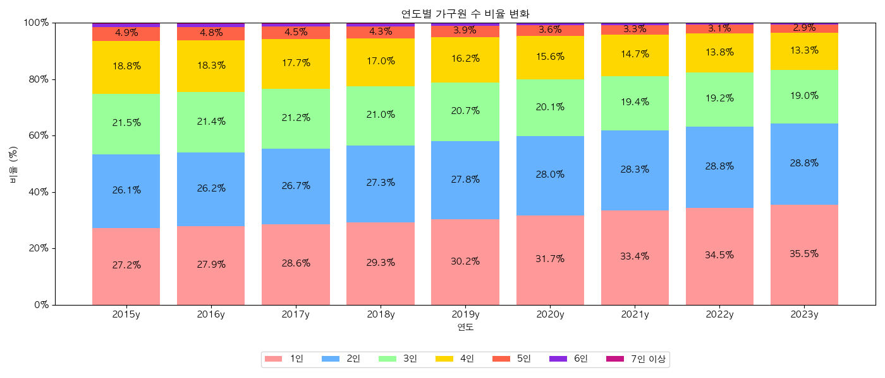
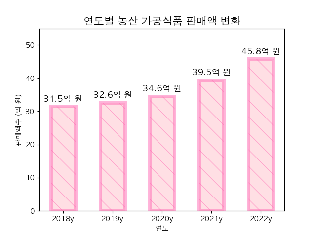
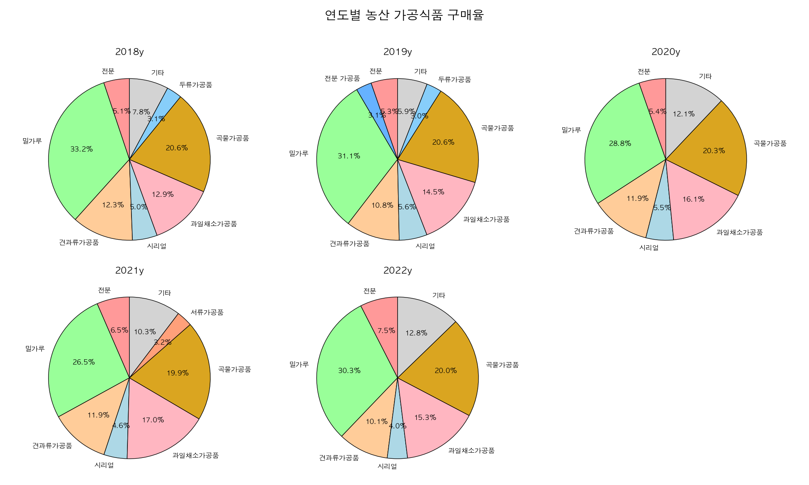
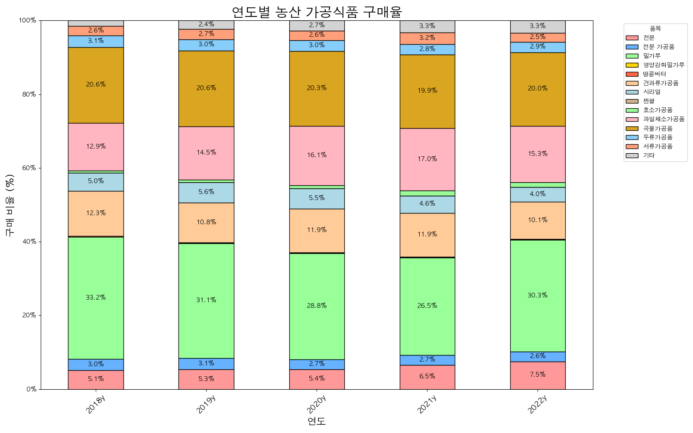
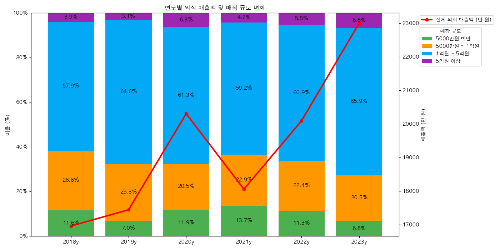

세대별 가구 구성 변화
통계청 인구총조사 데이터를 기반으로 연도별 가구 구성의 변화를 분석했습니다. 총 가구수는 지속적으로 증가하고 있으나, 세대 구성 비율은 크게 달라지고 있습니다.

총 가구수(하늘색 막대)가 꾸준히 증가하면서, 절대 수치만으로는 세대별 변화를 파악하기 어렵습니다. 따라서 비율 기반의 분석이 필요합니다.

비율로 환산하면 추세가 명확해집니다. 1인 가구와 1세대 가구가 빠르게 증가하는 반면, 2세대 이상 가구는 감소 추세입니다. 비친족 가구도 소폭 증가하고 있습니다.
가구원 수별 비율 변화
세대 구성이 아닌 가구원 수 기준으로도 동일한 경향이 나타납니다.

1~2인 가구가 전체의 과반을 차지하게 되었으며, 3인 이상 가구는 지속적으로 줄어들고 있습니다. 이러한 소규모 가구화는 식품 소비 패턴에도 직접적인 영향을 미칩니다.
농산 가공식품 구매량 변화
식품의약품안전처의 식품 및 식품첨가물 생산실적 데이터를 분석했습니다.

농산 가공식품 구매량은 매년 꾸준히 증가하고 있습니다. 소규모 가구 증가, 편의성 추구 등이 주요 원인으로 추정됩니다.
품목별 판매 비율 추이


품목별 판매 비율은 대체로 안정적이나, 서류(감자류) 가공품의 비중이 소폭 증가하는 추세입니다. 그 외 품목에서는 유의미한 비율 변화가 관찰되지 않았습니다.
외식 매출 및 업체 규모 변화
농림축산식품부의 외식업체 경영실태조사 데이터를 기반으로 외식 시장의 변화를 분석했습니다.

외식 매출은 전반적으로 우상향 추세였으나, 2021년 팬데믹 영향으로 급감한 후 회복 중입니다. 동시에 대형 매장의 비중이 꾸준히 늘어나고 있어, 외식 시장이 규모화되고 있음을 보여줍니다.